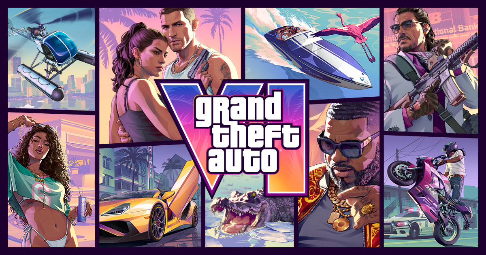
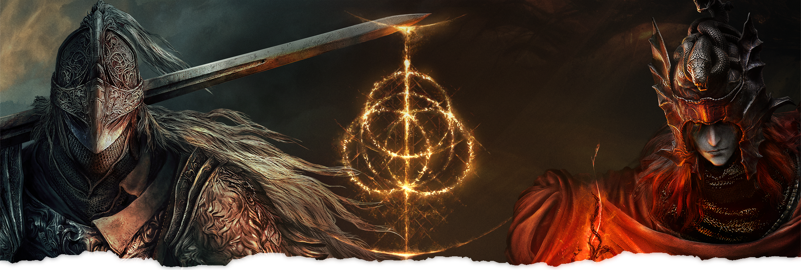
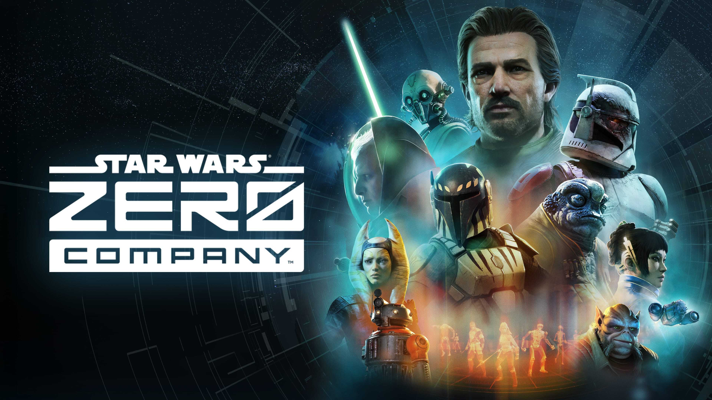
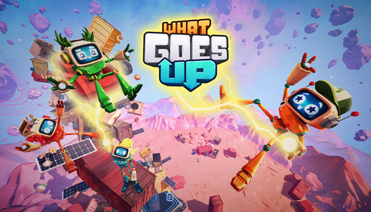
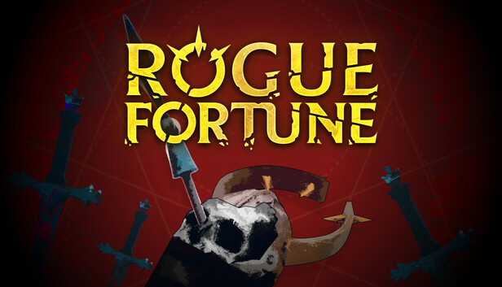

🔥🔥🔥
侠盗猎车手VI（Grand Theft Auto VI）：An Extended Look
Netflix 专场已播；约 26 分钟标准 PS5 实机，6 小时后上 YouTube / 官网。
- 发售
- 2026-11-19 · PS5 / Xbox Series
- 片长
- 约 26 分钟（一线）
- 实机
- 标准 PS5（片尾）
- 定价
- $79.99，无实体盘（The Verge）
今日无新旗舰。今日无新 MCP/Skill 推荐。
--restricted。Xbox Day 2 / Anthropic MHS / 科学家席位 / Cursor Origin 落在昨窗 9:30 截稿后，今日补入核。本版按“全轴扫描、增量展示”：53 个轴 / 子轴完成扫描，页面只显示有新增 Signal 的模块。
今日无新旗舰。今日无新 MCP/Skill 推荐。
--restricted。游戏开发空库未出 Tab。Awesome Indies 片单待核。
Netflix 专场已播；约 26 分钟标准 PS5 实机，6 小时后上 YouTube / 官网。
Switch 2 今日发售；本体 + 黄金树幽影 + 新职业 / 防具 / 灵马外观。
Bit Reactor / EA 回合制战术 8/27 上线；Steam 简中店名已坐实。
面向实验室与制造设备的模型无关硬件规范；MCP 只是三条控制路径之一，不是可安装推荐。
| 观察库 | 独立 Signal | 密度 | 结构性判断 |
|---|---|---|---|
| AI 观察 | 4 | 中 | 无新旗舰；无新 MCP/Skill 推荐。MHS 研究预览 + 科学家 1 万席 + Cursor Origin / 无 SCM Cloud Agents + Claude Code 2.1.248 --restricted |
| 二次元游戏观察 | 0 | 空 | 空库未出 Tab。3.2 前瞻今晚 19:30 未播 |
| 游戏开发观察 | 0 | 空 | 空库未出 Tab。引擎官方与周五 cs.GR 均空 |
| 游戏行业观察 | 7 | 高 | GTA6 Extended Look + 褪色者版发售 + 零号连队 / 瘟疫传说传承口碑 + Day 2 片单增量 + 独立世界首发两作 |
今日无新旗舰。今日无新 MCP/Skill 推荐。
/new 截稿仍是周四 27 Aug 清单；周五新表未出。周四论文昨已报。另记但不单列：Anthropic 同期 $5M wellbeing 评估资助、科学家项目里 Fable/Mythos 生命科学限制——不是模型发布。
8/27 官方开研究预览：让 Agent 安全操作可编程实验室 / 制造设备的共享规范。模型无关，计划开源。不是可安装 MCP/Skill。
高权重轴。规格预览，不是推荐条。关注度 · 🔥🔥。
8/27 起为全球科研 PI 开 Claude 科学家团队计划：Standard 免费，Premium $15/月（5× 用量），为期一年。
应用轴。关注度克制 · 🔥。
8/27 changelog：Cloud Agents 不再要求已连接 GitHub / 第三方 SCM。可从空白 prompt 起，再存到 Cursor Origin 仓库；浏览器预览 + 可接 Vercel 发布。
编程轴。关注度克制 · 🔥。
27 Aug 22:12 UTC = 28 Aug 06:12 CST。新开关去掉会跑命令 / 代码的内置工具和 WebFetch（除非写进 --tools），文件工具锁在工作目录，拒绝 bypassPermissions，忽略用户 / 项目 / 本地 settings。
--restricted 或 CLAUDE_CODE_RESTRICTED=1experimental.cacheTtl、self-hosted-runner 标签覆盖、Enterprise /usage-credits、同机跨会话 SendMessage（Bedrock/Vertex/Foundry）。workflow-authoring skill——仍是产品内置，不是新推荐条。编程轴列车。关注度克制 · 🔥。
GTA6 Extended Look 已播。褪色者版今日发售。Xbox Day 2 已播，Awesome Indies 片单待核。
未播不预写。Awesome Indies 一线完整名单未核，不编标题。
Netflix 8/27 15:00 ET（= 8/28 03:00 CST）全球首播；6 小时后上 Rockstar YouTube 与官网 Now Playing。约 26 分钟，片尾标明标准 PS5 实机。

昨截稿未播，今日补入核。关注度 · 🔥🔥🔥。
Switch 2 完整版今日解锁：本体 + 《黄金树幽影》+ 新职业 / 防具 / 灵马托雷特外观。同日他平台上架 Tarnished Pack。

发售日 Signal。关注度 · 🔥🔥。
Bit Reactor / EA 单人回合制战术，克隆人战争末期。Steam 简中名称：星球大战 零号连队™。8/27 发售。

发售 + 口碑。关注度 · 🔥🔥。
Asobo / Focus 瘟疫传说世界观衍生。Steam 简中名称：共鸣：瘟疫传说传承。8/27 发售，Game Pass 首日。

发售口碑。关注度克制 · 🔥。
Day 2 世界首发两作进表。Awesome Indies 已播，一线完整名单待核，不编造。已定档深潜压表。
| 作品 | 窗 | 场次 / 轴 |
|---|---|---|
| 破烂捡上天（What Goes Up） | 2026（无日历日）· GP | Xbox Day 2 · 已单列独立 |
| Rogue Fortune | 2027 | Xbox Day 2 · 已单列独立 |
表 A：Gematsu。ONL / Day 1 / FGS 见 2026-08-27。
| 作品 | 新锁 | 说明 |
|---|---|---|
| Son of Thanjai | 2027 春 · GP | Ayelet Studio；只进片单 |
表 B：Gematsu 11:32 AM EDT 8/27 = 23:32 CST
| 作品 | 已定档 | 本场 |
|---|---|---|
| Stuntman: Hollywood | 先前已宣 | Day 2 补侏罗纪世界灵感关 |
| Gravhounds | Game Preview 2026-11-02 | Xbox Wire 8/27 工作室深潜；档期 ONL / 8/25 已报，不是新首发 |
表 C：Gematsu / Xbox Wire。Dumpster Gang Xbox Wire 8/27 是 Day 1 已报作品的开发者稿，不进新表。
规范 5.17。Awesome Indies 待核。关注度克制 · 🔥。
Bossa Games / Team17 物理合作建造；Xbox Day 2 世界首发。Steam 简中名称：破烂捡上天。年窗 2026，无日历日；Game Pass。

展会周独立世界首发即达门槛。关注度克制 · 🔥。
Glowmade 高速 roguelite 动作。Xbox Day 2 世界首发。Steam 简中店名仍是英文，查完链无官方简中，留英文。

?l=schinese 标题仍 Rogue Fortune；厂商中文稿 / 主机店页未核到简中名称，按 5.18 留英文。展会周独立世界首发。关注度克制 · 🔥。
窗口（2026-08-27，2026-08-28] Asia/Shanghai。空库：二次元游戏观察、游戏开发观察未出 Tab。生成于 2026-08-28 09:30 档日常规整理。